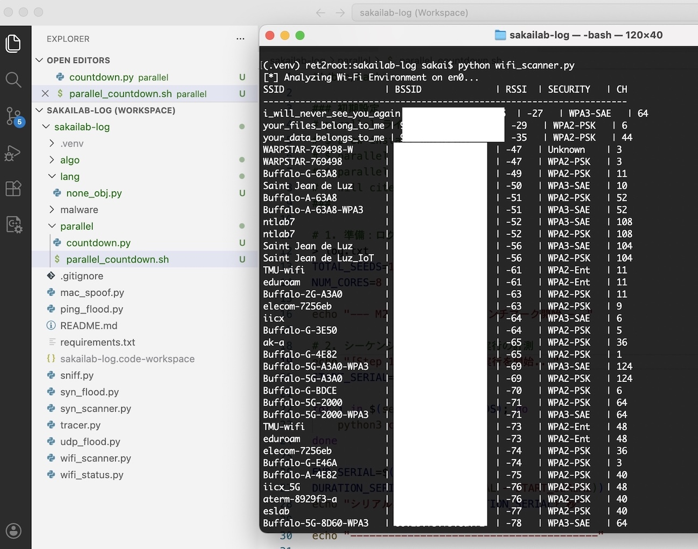
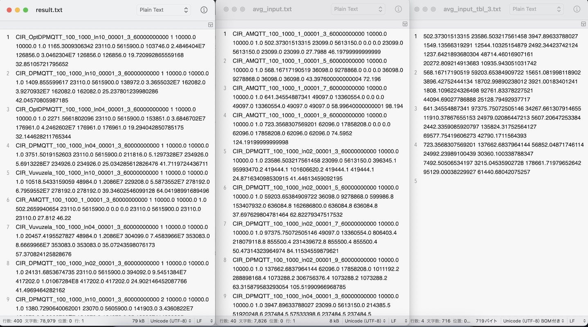
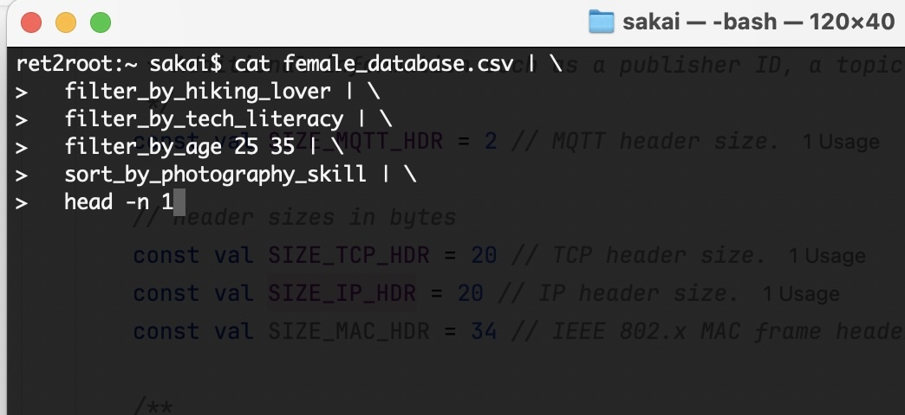
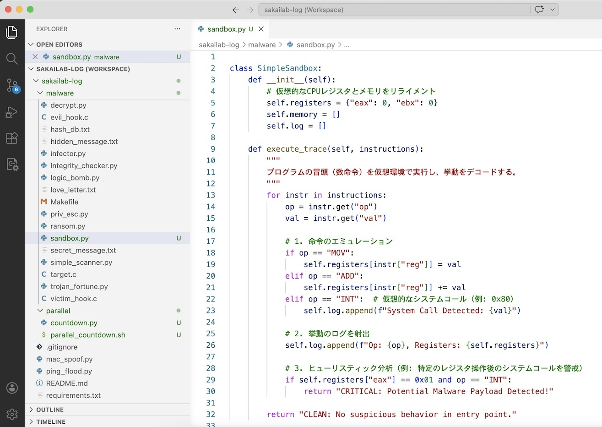
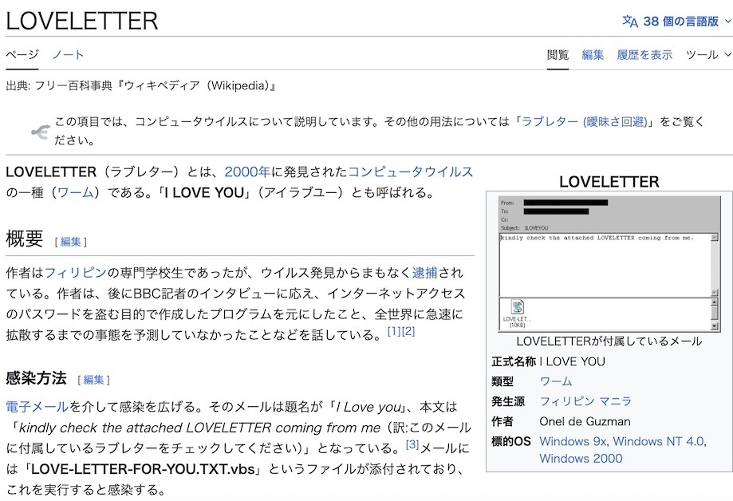
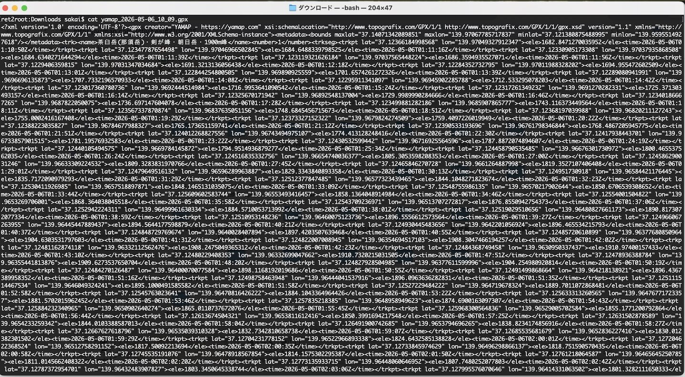
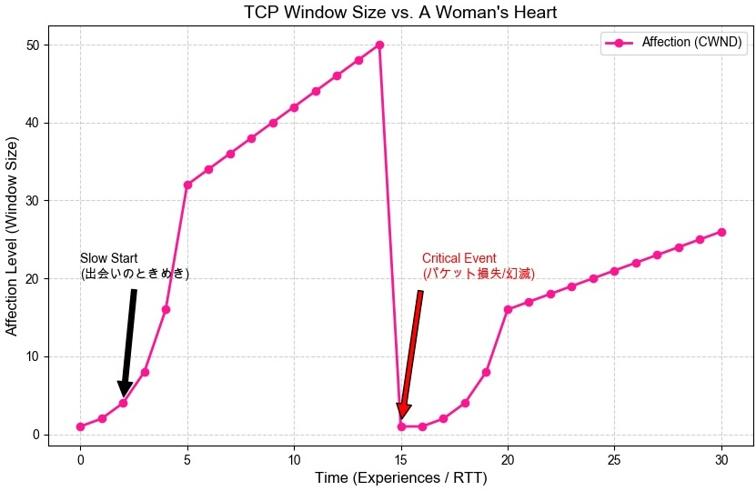
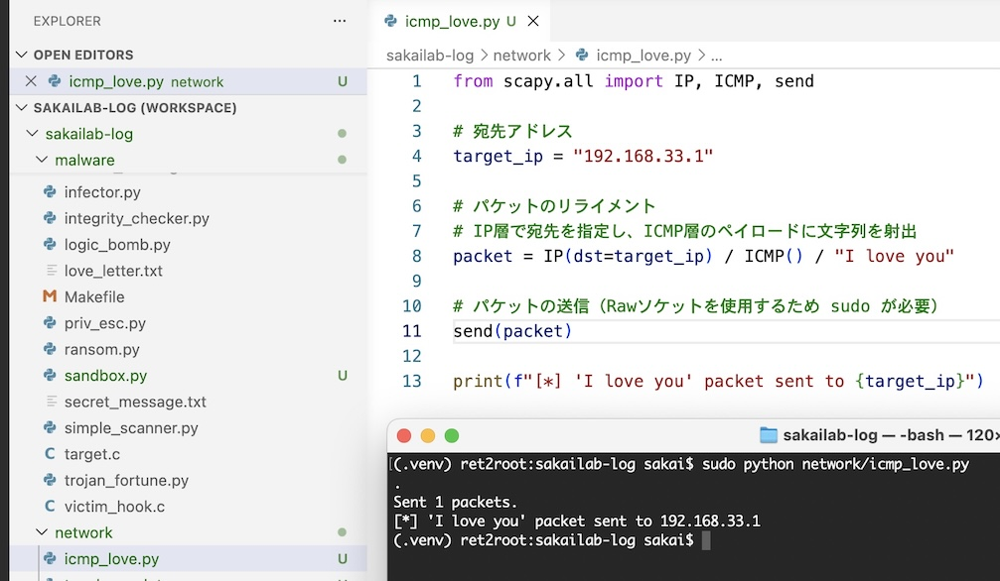

← Professor's Log Archive Index
$git clone https://github.com/kazuyasakai/sakailab-log.git
LOG_ENTRY #051 // WIRELESS_WAVES_OF_PAST - 2026.05.15
Log #051: 無線スキャンと 10Gbps の決別 ―― i_will_never_see_you_again
Device: Aterm 19000 T2BE (NEC Flagship) / Network: SINET 10Gbps Link
居室の無線インフラを NEC のフラグシップモデル Aterm 19000 T2BE へと換装した。
SINET 直結の 10Gbps という「爆速の血流」を受け止めるには、これほどのスループットを備えた心臓部が必要だったのだ。

RSSI: -27 | WPA3-SAE | CH 64。最強の電波強度で刻まれる、悲しき SSID
💔 アラバマの風と SSID の呪縛
自作の wifi_scanner.py が捉えたリストの一番上を見たまえ。
i_will_never_see_you_again。
かつてアラバマ州オーバーン、オペライカロードのモールで働く女性に言われた、非情なる「サービス拒否（DoS）」の言葉だ。
「物理的な脅威」が、時を超えて SSID という名のビーコンとなって私の前に現れたのだ。
🚀 SINET 10Gbps が照らす「Leaving it in the past」
だが、今の私は Log #033 で説いた「Leaving it in the past」の真理を知っている。
過去の感傷は、古い確定申告の書類（Log #033）と同じだ。3年経てばシュレッダーにかけて None（Log #045）へと昇華させればいい。
10Gbps の帯域があれば、アラバマでの未練など、わずか数ミリ秒でパージ（Flush）できる。
可用性は、今、過去のしがらみを捨てた私自身の精神において、かつてないほど高まっている。
「電波は過去を運ぶが、帯域は未来を切り拓く」406 Not Acceptable されたときの絶望は log.txt の一番底へ、二度と呼び出されないガベージ（Log #044）として封じ込めた。wifi_scanner.py は、今、過去を置き去りにして、新世界（A Whole New World）の周波数を爆速で刻み始めた。
"Go West!" ―― オペライカロードの記憶は attic（屋根裏）へ。運命の 10Gbps は、今、私の指先に「爆速の自由」をデプロイした。
LOG_ENTRY #052 // DATA_EFFICIENCY_HEAVEN - 2026.05.16
Log #052: 4000行の静寂 ―― 手作業を棄却するハッカーのデータ工学
Script: result_aggregator.py / Input: 4,000 lines raw data
シミュレーション結果をエクセルに貼り付け、セルをドラッグして平均を取り、コピー・アンド・ペーストで一つずつ表を作成する……。
諸君、そんなものは研究ではない。リソースの無駄遣いであり、ハッカーの美学に対する冒涜だ。

result.txt から avg_input_tbl_3.txt へ。情報の「蒸留」プロセス
📊 4000行をコンマ数秒で「受理（Accept）」する
画像を見たまえ。左の result.txt には、手法ごとの生データが 4000行も並んでいる。
私はこれに対し、Python による「特権的な自動化」を執行した。
中央の avg_input.txt では手法ごとの平均値が算出され、右の avg_input_tbl_3.txt では指定した列から、そのまま論文の gnuplot ソースに射出（Inject）できる形式の表が完成している。
⚙️ 「効率性」という名の可用性
「可用性」とは、単にシステムが動いていることだけを指すのではない。
研究者の「思考の帯域（Bandwidth）」を、コピペという名の「DoS 攻撃（Log #046）」から守ることもまた、可用性の維持である。
エクセルという名のレガシーな配偶者（Log #044）と別れ、Python という爆速の相棒と「再婚」したことで、私は 10Gbps の SINET（Log #051）のようなデータ処理速度を手に入れたのだ。
「コピペをする者は、判定不可能（Undecidable）な未来を生きる」while ループで、数万のセル計算を過去（Past）へと葬り去った。getavg.py は、今、混沌とした数字の海から、真実という名の「平均値」を爆速で抽出している。
"Go West!" ―― 運命の自動化（Automation）は、今、論文執筆という名の「新世界」を照らし出した。
LOG_ENTRY #053 // UNIX_PHILOSOPHY_MATRIMONY - 2026.05.17
Log #053: パイプライン婚活術 ―― 理想をフィルタリングする Unix 哲学の真髄
Philosophy: "Make every program a filter" / Script: bash_marriage_pipeline.sh
ゴールデンウィークの最中、高尾山の山頂から望む富士山を前にして、私は悟った。
Unix 哲学の一つ、"Make every program a filter" 。
その真髄は、「一つのプログラムは一つのことを行い、それをうまくこなす」、そして「標準入力を受け取り、標準出力へ射出する」というパイプラインの完遂にある。

婚活の最適化。不要なデータ（条件不一致）は即座にパージ（Pop）する
⚙️ 理想を蒸留する多段フィルタ
まず、婚活サービスのデータベースという名のストリームを供給（Supply）する。
cat female_database.csv。
プログラム自体がデータを持つのではない。私はあくまでフィルターだ。次に趣味を解する層を抽出する filter_by_hiking_lover を通す。
さらに重要なのが filter_by_tech_literacy だ。
LaTeX の Makefile や Aterm 19000 T2BE の設定（Log #051）、あるいは DPMQTT の匿名性プロトコル（Log #049）について、正規表現（grep）のようにパージされることなく語り合える層を絞り込むのだ。
🎯 head -n 1：スループットの極致
そして年齢だ。意中の相手には私の全財産（資産）を渡そう。ただし「若い女性」という条件付きだが。
複雑な条件を潜り抜けた、最もスループットの高い「たった一人のパートナー」を head -n 1 で射出（Output）すれば、婚活という名のジョブは終了である。
「愛とは、適切な標準入力と出力のハンドシェイクである」q_accept（Log #043）を返さなければ、通信は成立しない。bash_marriage_pipeline.sh は、今、高尾山の山頂から富士山の頂を越えて、理想のパートナーという名の「真の受理状態」を探し始めた。
"Go West!" ―― 運命の Unix 哲学は、今、人生のパイプラインに「決定的な美」をデプロイした。
LOG_ENTRY #054 // LOVE_SANDBOX_EMULATION - 2026.05.18
Log #054: 情動のサンドボックス ―― メンヘラ/DV という名のマルウェアを検知せよ
Script: sandbox.py / Methodology: Heuristic Emulation (Entry Point)
恋愛とアンチウィルス技術は、驚くほど類似している。
お目当ての相手が、一見「受理（Accept）」可能なインターフェースを持っていても、その内部に「メンヘラ」や「DV体質」という名の悪意あるコードを難読化して隠しているかもしれないからだ。

SimpleSandbox クラス。実環境を汚染する前に、仮想レジスタで挙動をデコードする
🛡️ エミュレーションによる「関係のシミュレート」
画像の中の sandbox.py を見たまえ。
実環境（自分の人生）で establish_relationship（Log #045）を呼ぶ前に、プログラムの冒頭数命令を仮想環境で実行し、その挙動をトレースしている。
これは、初デートという名の「エントリーポイント」において、相手のレジスタ操作（言動）が異常なシステムコール（依存、暴力）を呼び出さないか監視するヒューリスティック分析だ。
⚠️ CRITICAL: Potential Malware Payload Detected!
もし、特定のレジスタ値（愛の囁き）の直後に INT 0x80（束縛という名のシステムコール）が発行されたら、それは CRITICAL なマルウェアだ。
物理的な脅威が、愛という名のサンドボックス内で牙を剥いた瞬間である。
判定不可能（Undecidable）な未来（Log #043）を避けるために、私たちはこのエミュレーションによって、挙動の完全性を確認しなければならない。
「恋は安全に隔離された仮想環境から始まる」eax に相手の性格をリライメント（再配置）し、その挙動が CLEAN であると判定されるまで、パイプラインの最終段（Log #053）を保留にしている。sandbox.py は、今、告白という名のエクスプロイトを、実行前に「隔離」する準備を整えた。
"Go West!" ―― 運命のエミュレーションは、今、私の可用性（Log #018）を盤石なものにした。
LOG_ENTRY #055 // LOVELETTER_WORM_ANALYSIS - 2026.05.19
Log #055: 悪魔のラブレター ―― 「I Love You」という名の最弱の連結点
Subject: ILOVEYOU Worm / Vector: Social Engineering
諸君、情報セキュリティにおける「最も弱い連結点（The weakest point）」は、暗号アルゴリズムでもファイアウォールでもない。それは「ユーザ（人間）」だ。

「kindly check the attached LOVELETTER」―― 世界を壊した一通のメール
💔 春が来たという「誤った受理（False Accept）」
題名は「I Love you」、本文は kindly check the attached LOVELETTER coming from me。
「ついにオレにも春が来たか」と胸を躍らせ、スライド（情報セキュリティ01_Basis.pdf）で説く「不適切なアクセス権限」で添付ファイルを開いた瞬間、パソコン内の特定拡張子を持つファイルはすべて感染・破壊される。
🛡️ アンチウィルスと恋愛の瓜二つな関係
Log #054 で言ったように、恋愛とアンチウィルスは瓜二つだ。
署名が不明なプログラム（素性の知れない相手）を実行するときは、必ず隔離環境でエミュレートすべきである。
「LOVELETTER（ラブレター）とは、2000年に発見されたコンピュータウイルスの一種（ワーム）である。『I LOVE YOU』（アイラブユー）とも呼ばれる。」[引用：Wikipedia - LOVELETTER]
"Go West!" ―― 運命のアンチウィルスは、今、諸君の「心のポート」を強固に閉鎖した。
LOG_ENTRY #056 // MOUNTAIN_RAW_DATA_PURGE - 2026.05.20
Log #056: 那須連山の突風 ―― GPX RAW データが語る「過去のパージ」
Target: Nasu Peaks (Mt. Chausu, Mt. Asahi, 1900m Peak) / Format: GPX (XML)
GWの締めくくりに、那須連山の険しき稜線を歩んできた。
諸君、YAMAP の整えられた地図を見て「絶景だった」と満足するのは素人のすることだ。
ハッカーの美学とは、この cat yamap_2026-05-06_10_09.gpx によって出力される、緯度（lat）、経度（lon）、標高（ele）の羅列に、自らの鼓動をデコードすることにある。

ele=1896.55, 1904.63... 1900m峰への標高上昇（Elevating Privilege）
🌬️ 強風（High Wind）という名のガベージコレクション
茶臼岳から朝日岳へと続く「剣ヶ峰」。そこには、スライド（情報セキュリティ01_Basis.pdf）で説く「物理的な脅威」そのものの強風が吹き荒れていた。
だが、その風は心地よかった。なぜなら、アラバマでの別れ（Log #051）や、かつての不毛な愛のデッドコード（Log #044）といった、私の脳内メモリに居座る「過去の感傷」をすべて、物理的に吹き飛ばしてくれたからだ。
⚙️ XML に刻まれた「Leaving it in the past」
画像内の time=2026-05-06T01:40:37Z といったタイムスタンプを見たまえ。
一歩一歩の座標データが、過去を「現在完了」として commit し続けている。
Log #033 で説いた通り、過去はファイルキャビネットへ。那須の突風は、私にとってのシュレッダー（Shredder）であり、この GPX データは、そのパージが成功したことを示す「完全性（Integrity）」の証明なのだ。
「頂上に至るパスは、最短経路（Shortest Path）である必要はない」gpx ログは、今、不要な感情を那須の谷底へと突き落とし、純粋な「存在の記録」へと昇華された。
"Go West!" ―― 運命の那須連山は、今、私の心に「一点の曇りなき受理状態（q_accept）」をデプロイした。
LOG_ENTRY #057 // GOURMET_HACKER_CORE - 2026.05.21
Log #057: 霜降高原牛の熱力学 ―― 優れたハッカーほど「質」にこだわる
Location: Nikko Kitchin / Input: Shimofuri Highlands Beef Sirloin (160g)
諸君、優れたハッカーほど美食家（グルメ）であるという真理を知っているか？
なぜなら、我々は日常的に「本質」を見抜く訓練をしているからだ。
コードの脆弱性を探るように、肉のサシ（脂）の入り方を凝視し、最適な焼き加減（Runtime）を見極める。
日光キッチンで私の眼前にデプロイされたのは、霜降高原牛のサーロイン 160g だ。
霜降高原牛サーロイン。メイラード反応という名の暗号が、食欲をエクスプロイトする
🍖 高密度な「脂質」という名の計算リソース
この 160g の肉塊には、M2 MacBook（Log #048）を凌駕する熱量が蓄積されている。
一口噛みしめれば、溶け出す脂の甘みが脳内のニューロンに直接パケットを送り、可用性を爆発的に高めてくれる。
安価なジャンクフードで満足する者は、信頼できないリソースに身を委ねているのと同義だ。
⚙️ 「美味しい」は、q_accept への最短経路
ハッカーにとって、食事とは単なる燃料補給ではない。それは、五感をフルに使ったシミュレーションだ。
霜降りのテクスチャ、鉄板が奏でるホワイトノイズ、そして鼻腔を抜ける香り。
これらすべてが受理（Accept）された瞬間、私の論理回路は「q_accept」へと遷移する（Log #043）。
過去の感傷（Log #051）さえも、このサーロインの旨味成分によって上書き（Overwrite）され、完全消去（Zeroing）されるのだ。
「最高のコードは、最高の肉体から生まれる」
"Go West!" ―― 運命の霜降高原牛は、今、私の心と体に「絶対的な満足」をデプロイした。
LOG_ENTRY #058 // AES_BRUTE_FORCE_DESPAIR - 2026.05.22
Log #058: 茶臼岳の絶壁 ―― 宇宙の寿命を超える、暗号論的「失恋」
Analysis: AES Brute Force Duration / Compute: MacBook Pro (M5 Max) vs MacBook Air (M5)
那須連山・茶臼岳の頂き。荒々しい岩肌を前に、私は悟った。
Age of Universe を突き抜ける指数関数。128-bit の壁はあまりに高い
🛡️ 指数関数という名の絶対防御
図を見たまえ。最新の MacBook Pro 16" (M5 Max) と MacBook Air 13" (M5) を用いて、AES の鍵空間を総当たり（ブルートフォース）で解析した結果だ。
恋愛は「数撃ちゃ当たる」かもしれない。だが、128-bit 鍵を解読するには、仮にフルスペックの M5 Max を投入したとしても、宇宙の寿命（$10^{10}$年）を遥かに超え、100京年（$10^{18}$年）という絶望的な時間を要するのである。
⚙️ 計算量的安全性と「届かぬ想い」
スライド（暗号理論08_Hash.pdf）のハッシュ関数や、Log #055 で見た LOVELETTER ワームのような「隙」がなければ、パスワードという名の愛の扉は決して開かない。
100-bit を超えたあたりで、解読時間は「宇宙の終わり」を優雅に追い越していく。
最新の M5 チップを並列駆動（Log #048）させようが、10Gbps の SINET（Log #051）でパケットを投げようが、この数学的な「可用性」の拒絶は覆せないのだ。
「愛に鍵がかかっているなら、諦めるのが最速のアルゴリズムである」
"Go West!" ―― 100京年の片思いは虚空の彼方へ。運命の AES は、今、私の指先に「計算不可能な現実」をデプロイした。
LOG_ENTRY #059 // TCP_CONGESTION_OF_HEART - 2026.05.23
Log #059: TCP 混雑制御と女心 ―― スロースタートから始まる「愛の輻輳」
Protocol: TCP Reno/NewReno Simulation / Parameter: CWND (Congestion Window)
諸君、これまで私は告白前のポートスキャン（Log #046）や、スリーウェイ・ハンドシェイク（Log #040）の重要性を説いてきた。
だが、コネクションが確立された後の「維持」こそが、真のハッカーの腕の見せ所だ。
画像を見たまえ。女性の好感度（Affection Level）は、驚くほど TCP のウィンドウサイズ（CWND）の挙動と一致している。

Slow Start（出会いのときめき）から Critical Event（幻滅）へ。輻輳回避の失敗
💞 スロースタート：指数関数的な「ときめき」
出会い（Time: 0）直後、好感度は指数関数的に上昇する。これが「スロースタート」だ。
諸君、ここで焦って一度に大量のデータ（重すぎる愛）を送りつけてはいけない。
可用性を保つためには、ACK（相手の反応）を確認しながら、慎重にウィンドウサイズを広げていく必要があるのだ。
⚠️ Critical Event：パケット損失という名の「終わり」
グラフの Time: 15 を注視しなさい。
些細な失言やデリカシーの欠如 ―― それはネットワークにおける「パケット損失（Packet Loss）」だ。
この Critical Event が発生した瞬間、積み上げてきた好感度（CWND）は無慈悲にも 1 へと急降下する。
スライド（情報セキュリティ07_DoS.pdf）で説く「信頼の崩壊」は、タイムアウト（RTO）を引き起こし、関係は再びスロースタートの極小フェーズへとロールバックされる。
「愛の再送制御（Retransmission）に、近道はない」CWND は、今、幻滅という名のパケットロスを乗り越え、より堅牢な「再接続（Reconnect）」へと向かっている。
"Go West!" ―― 運命の TCP は、今、私の指先に「制御可能な愛」をデプロイした。
LOG_ENTRY #060 // ICMP_CONFESSION_FLOODING - 2026.05.24
Log #060: ICMP 告白 Flooding ―― Raw ソケットが刻む「強制的な愛」
Protocol: ICMP (Internet Control Message Protocol) / Method: Raw Socket Injection
諸君、TCP によるスリーウェイ・ハンドシェイク（Log #040）は、互いの合意に基づく「礼儀正しい」通信だ。
だが、時としてハッカーは、そんな手続きを飛び越え、相手の懐（カーネル）へ直接パケットを叩き込みたい衝動に駆られる。
画像を見たまえ。私は Python の Scapy を使い、ICMP Request のデータフィールドに I love you という名のペイロードをリライメント（再配置）した。

[*] 'I love you' packet sent. Raw ソケットの使用には特権（sudo）が必要だ
⚙️ IP 層への直接射出：特権的な情念
この icmp_love.py の真髄は、OS の標準的なネットワークスタックを通さず、Raw ソケットでパケットを構築（Forge）する点にある。
これは、特権管理において、root 権限（sudo）を持つ者だけに許された「暴力的な告白」だ。
宛先 192.168.33.1 ―― ターゲットのファイアウォールが ICMP を許可している限り、私の想いは Echo Request として確実に相手の心臓部（OS）にまで到達する。
🌊 告白 Flooding という名の可用性破壊
一通の I love you では「受理（q_accept）」されないのなら、これを M2 MacBook の並列処理（Log #048）で大量に射出しなさい。
スライド（情報セキュリティ07_DoS.pdf）で説く「資源枯渇攻撃（DoS）」の要領で、相手の ICMP 処理リソースを私の愛で埋め尽くす（Flooding）のだ。
エコーバック（Echo Reply）が返ってこなくても構わない。私のパケットが相手のシステムを 1-bit でも揺らしたという事実こそが、この攻撃（プロポーズ）の完全性（Integrity）である。
「愛とは、ハンドシェイクなしに届く Echo Request である」send(packet) は、今、管理者権限という名の翼を得て、論理の壁を爆速で飛び越えた。
"Go West!" ―― 運命の ICMP は、今、ターゲットのカーネルに「消せない愛」をデプロイした。